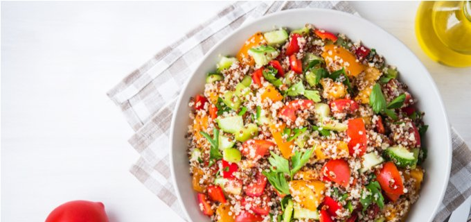

Quinoa Salad

Description
Quinoa is known as quite a trendy food but in fact it is delicious, low in FODMAPs and a higher fibre alternative to other grains such as rice. This super-simple recipe is nutritious, tasty and is a great vegetarian or vegan option.
It’s really easy to pack and take to work lunch and will keep for a few days in the fridge. Add your choice of protein to make it a balanced meal (see serving suggestions).
Ingredients
- 1 cup of tri-coloured quinoa cooked in 2 cups of water or our certified low sodium vegetable or chicken-style stock (or homemade low FODMAP stock)
- 1 large red capsicum, large, ½ cm diced
- 2 medium Lebanese cucumbers, ½ cm diced
- 1 large carrot, grated
- ½ cup fresh coriander, chopped
- Juice of 2 lemons OR limes
- 1½ Tbsp of fish sauce (soy sauce for vegan option)
- 2 tsp ginger, minced
- 2 tsp sesame oil
- Chopped fresh chilli (optional)
Steps
- Rinse quinoa very well in a fine sieve*. Cook quinoa by covering 1 cup with 1½ cups stock or water and microwave in a covered container for 10 minutes. Alternatively, to cook on the stove top, bring to the boil, then reduce heat to very low
and cook covered for 10 minutes. Allow quinoa to rest (still covered) off the heat for a further 10 minutes. Place in a large bowl and fluff with a fork then allow to cool.
*It is very important to rinse your quinoa well or it will taste VERY bitter
- While the quinoa is cooking prepare the vegetables and herbs then add to the quinoa and combine.
- Add all dressing ingredients into the bowl and mix well.